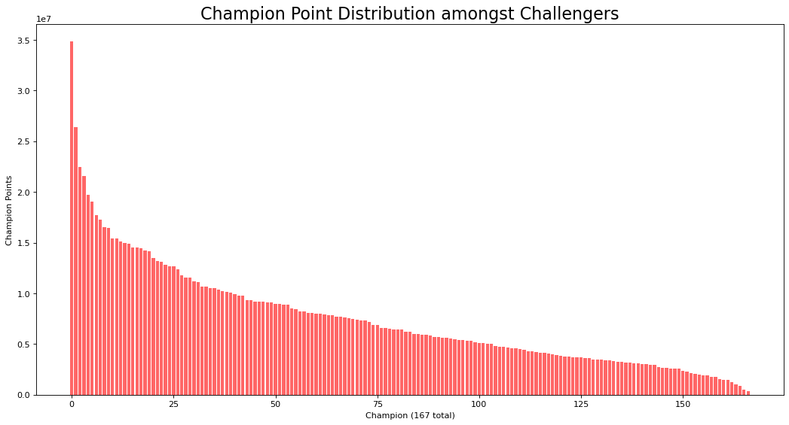
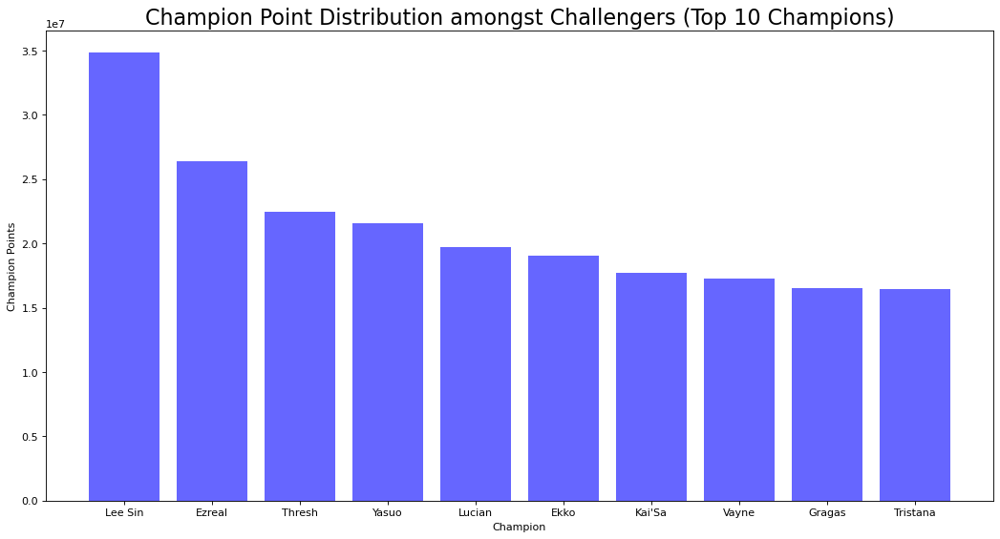

Challenger Masteries
For the Challenger Masteries I looked into the mastery points of all current (300) Challenger Rank players. Then I added the points for each Champion and assigned Champion names to the data, since they're only labeled with an ID. The results show that in total there are more Mastery Points on Champions with a higher individual influence on the game (aka solo carry potential) such as Ezreal, Yasuo or Lee Sin.
